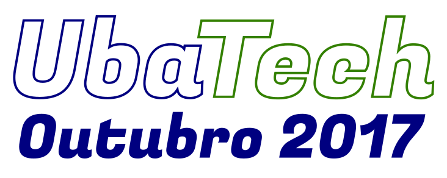

Qual papel as Tecnologias Livres e de código aberto podem assumir no desenvolvimento de arranjos inovadores, abundantes, inclusivos e sustentáveis? A primeira edição do UbaTech – Fórum de Tecnologias Livres vai tocar nessas questões e em como elas repercutem no contexto local de Ubatuba, cidade no litoral norte paulista. Ubatuba é reconhecida como um destacado destino turístico brasileiro. Entretanto, a cidade precisa também desenvolver alternativas de desenvolvimento que permitam diversificar sua economia e garantir atividade ao longo do ano todo.
O evento, liderado por Jon “Maddog” Hall (CEO da OptDyn e Presidente do Conselho do Linux Professional Institute – LPI), acontece entre os dias 11 e 13 de outubro. Tem por objetivo principal consolidar as bases para transformar Ubatuba em um pólo de desenvolvimento de tecnologias livres, que vai criar oportunidades em diversos campos. As tecnologias livres têm a capacidade de gerar resultados rapidamente, atraindo investimentos com baixo impacto ambiental e alto potencial de formação e inclusão de jovens talentos. Podem ainda se beneficiar de características particulares de Ubatuba, como a qualidade de vida, a diversidade cultural, o patrimônio natural e a localização a meio caminho entre as maiores capitais do país.
O UbaTech vai trazer a Ubatuba grandes nomes do universo das tecnologias livres para apresentar à cidade uma seleção de Tecnologias Livres e de código aberto, e debater o potencial que elas podem ter para os negócios, a administração pública, a educação e outros setores.
As Tecnologias Livres trazem diversos benefícios econômicos para uma cidade como Ubatuba:
-
oferecem a organizações (de qualquer tamanho) soluções de qualidade, desenvolvidas por especialistas no mundo inteiro, que aumentam a produtividade, reduzem custos e criam oportunidades de inovação;
-
proporcionam a criação de arranjos econômicos locais, através dos quais integradores, programadores e outros fornecedores locais de tecnologias oferecem soluções customizadas às organizações locais, garantindo que o investimento em tecnologia seja tributado e reinvestido na própria cidade;
-
contribuem para a absorção de mão de obra certificada em cursos técnicos e profissionalizantes, garantindo que os talentos formados na cidade encontrem oportunidades de carreira.
O UbaTech tem o apoio da Prefeitura de Ubatuba, da Associação Comercial, da Escola Técnica Municipal Tancredo Neves e da comunidade local de software livre para oferecer uma visão concreta sobre Tecnologias Livres e construir um plano de ação para consolidação de ações de tecnologia em Ubatuba, que poderá servir como piloto e modelo para outras cidades.
A programação completa estará sempre atualizada na página http://ubatech.ubatuba.cc.